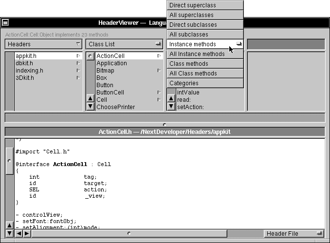

Copyright ©1995 by NeXT Computer, Inc. All Rights Reserved.
| A |
The Header Viewer Application
|
| Header Viewer is a programmer's research and reference tool. With Header Viewer, you navigate through NEXTSTEP's application programming interface (API); review the declarations of language elements such as methods, functions, and constants; and retrieve relevant passages from the NEXTSTEP developer documentation. Header Viewer helps you unravel unfamiliar code, whether building blocks from the NEXTSTEP software kits, programming examples, or programs written by your own development team.
This chapter introduces Header Viewer and shows how it can speed your programming effort. The next section gives you some insight into how Header Viewer works. The remaining sections teach you how use Header Viewer in your development work. |
| Header Viewer and Header Files |
| Header files are indispensable to developers. They declare the programmatic interfaces to individual modules of code and, through #import and #include statements, link one header file to another. The header file is the final authority for any particular programmatic interface.
Although the final authority, header files aren't always the easiest reference to use. In an object-oriented environment such as NEXTSTEP, a large proportion of header files declare the interfaces to classes; in general, one class per header file. However, since a class inherits part of its interface from its superclass, you might have to search several files to learn the capabilities of a single class. Compounding this problem is the shear number of classes: The Application Kit alone has over sixty classes. A more sensible approach would be to have a tool that could follow these interconnections directly. In principle, a simple tool that performed text-based searches on the header file might do the job; however given that the header files for the Application Kit alone contain nearly 8000 lines of declarations, in practice such a tool would be too slow. A better approach is needed.
Precompiled Headers Header Viewer's approach is to use NEXTSTEP's precompiled headers. Briefly, a precompiled header is one that has been processed by the preprocessor, leaving it in a compact, binary format. During preprocessing, macros are expanded, comments removed, other headers included as indicated by #include or #import directives, and language tokens parsed from the resulting stream of text. (For more information on precompiled headers, see the chapter on the GNU C Preprocessor in the NEXTSTEP Development Tools and Techniques manual.) Because it uses precompiled headers, Header Viewer can be called a language-sensitive browser. Precompiled headers are stored in files having a ".p" extension. NEXTSTEP Developer includes precompiled headers (in /NextDeveloper/Headers) for the: |
| Application Kit | (appkit/appkit.p) | ||
| Database Kit | (dbkit/dbkit.p) | ||
| Indexing Kit | (indexing/indexing.p) | ||
| 3D Graphics Kit | (3Dkit/3Dkit.p) | ||
| Standard C library | (bsd/libc.p) | ||
| ANSI C library | (ansi/ansi.p) | ||
| Mach threads library | (mach/cthreads.p) | ||
| The Object class | (objc/Object.p) |
| Upon launch, Header Viewer loads the first four precompiled headers by default. If you plan to scan the API's of the other libraries, you can add the headers as described below. In addition, you can display the contents of other header files, including your own, by adding them to Header Viewer's list. See "Adding Header Files" later in this chapter for more information.
Note: For convenience, we'll refer to both ".h" files and ".p" files as header files in this chapter. Header Viewer accommodates both by precompiling ".h" files when needed.
Language Elements Header Viewer scans a precompiled header for the language elements it contains and categories them by type. It then lets you select the category you want to display. For example, you can look at all the methods, the functions, or the constants that are declared. Here a description of the categories Header Viewer lists: |
| Language Element | Description | |
| class | In the Objective C language, a prototype for a particular kind of object. A class definition declares instance variables and defines methods for all members of the class. In Header Viewer, classes can be listed or browsed in a class hierarchy. | |
| category | In the Objective C language, a set of method definitions that is segregated from the rest of the class definition. Categories can be used to organize a class definition into parts or to add methods to an existing class without creating a subclass. | |
| protocol | In the Objective C language, a list of methods not associated with any particular class. Protocols are often used to promote reuse of a design. | |
| method | A procedure that can be executed by an object. | |
| function | A routine designed to accomplish a particular task. Header Viewer lists all functions, including C library functions, NEXTSTEP "NX" functions, and UNIX system calls. | |
| global data | Variables that are visible to all programming modules. | |
| typedef | A type definition. In the C language, used to create a new variable type from existing types. | |
| struct | A structure data type, identified in the C language by the keyword struct. | |
| union | A data type that allows different data names and data types to be assigned to the same storage location. | |
| enum | The C language enumerated data type, consisting of a named set of values with an integer assigned to each member of the set. | |
| enum constants | The constants declared within an enumeration set. | |
| constant-like macros | A macro that is defined and treated like a constant. | |
| function-like macros | A macro that is defined and treated like a function. | |
| once-hack macros | A C language macro that is used to ensure that each header file is included only once. The Objective C #import declaration makes once-hack macros unnecessary. | |
| predefined macros | Symbol names that are defined by the compiler. Many deal with parameters such as byte swapping and determining a machine's CPU type. | |
| header | A file that contains programming declarations. In Header Viewer, header files can be listed or browsed in a hierarchy. |
| For additional information about the meaning and use of a language element, refer to NEXTSTEP Object-Oriented Programming and the Objective C Language or The C Programming Language by Kernighan and Ritchie. |
| Header Viewer and NEXTSTEP Documentation |
| Header Viewer retrieves documentation for any NEXTSTEP class, method, protocol, or category. It accesses files in /NextLibrary/Documentation/NextDev/GeneralRef, which correspond to chapters in the two volumes of the NEXTSTEP Developer's Library General Reference manual. It doesn't retrieve documentation for the other types of API elements, such as those declared in the standard C libraries. For documentation on these elements, use the Digital Librarian application or the UNIX man command, as appropriate.
Header Viewer retrieves only the defining passage from the developer documentation, not every reference. For example, when you use it to access the documentation for the display method of the View class, it shows you the description of the method found in the View class specification (/NextLibrary/Documentation/NextDev/GeneralRef/02_ApplicationKit/Classes/View.rtf). It doesn't search other sources for additional references to the method. In contrast, Digital Librarian searches for any occurrence of a text string in indexed text. Thus, you can use Digital Librarian to find references to a particular method in any of the manuals of the NEXTSTEP Developer's Library, in on-line programming examples, in header files, and in other sources. However, Digital Librarian searches for strings, not language tokens, so searching for references to the display method will find all occurrences of the string "display". (The Librarian bookshelf /NextLibrary/Bookshelves/NextDeveloper.bshlf is a good place to start a search for terms or concepts.) Each tool has its place in the development environment. In general, Digital Librarian is best when you're looking for conceptual information, when you are searching for examples of the use of some API element, and when you need to do a broad search of various sources. Header Viewer is best for retrieving concise, focused reference material for the object-oriented components of the NEXTSTEP kits. |
| Using Header Viewer |
| Header Viewer has a single main window, which can display a Browser view or a Finder view. The window displays the Browser view when the application is launched, but you can set a preference for the Finder view to appear as the default view. You can switch from one view to the other using the Utilities menu.
In either the Browser view or Finder view, you choose to view either a header file or NEXTSTEP developer documentation. A pop-up list in the lower right corner of the Header Viewer main window offers a choice of either a Header File or Documentation. Header files are always available; if documentation is not available, the Documentation choice is grayed out.
The Browser View The Browser view outlines hierarchies of classes and lists all occurrences of language elements such as methods or functions. The Browser view helps you discover what is available to you, both in NEXTSTEP's libraries and in code you obtain from others. |
| Header Viewer's Browser view resembles the Browser view of the NEXTSTEP Workspace Manager's File Viewer. However, with Header Viewer's Browser view you are not looking at the file system; rather, you are looking at the contents of header files. You don't see ordinary files and folders; instead, you see lists of header files or classes, methods, and other language elements.
A pop-up list above each Browser column allows you to choose what kinds of things you see in the Browser columns. You choose from a list of fourteen different language elements (see the section "Language Elements" above for a description of the language elements). Note: The pop-up list above a Browser column changes depending on what you select in the preceding column. The left-most column always shows a list of header files. The pop-up list above the column lets you remove header files. (See "Adding Your Own Header Files" below for more information.) |
| If you are browsing a Header Hierarchy and select a header that includes other headers (indicated by a pointer in the Browser column), you see a list of included headers in the neighboring column. A pop-up list above the neighboring column allows a choice of Direct Headers or All Headers. Direct headers are only those you see included in the header file. All headers are all those that the header is dependent on, whether directly or indirectly. |
| If you choose Class Hierarchy and select a class listed in the column, you see a list of the subclasses that inherit from the class. Use a pop-up list above the column to view superclasses (the parent class from which a class is derived), instance methods, class methods, or categories. |
|  |
| If you choose Class List and select a class listed in the column, you see a list of its instance methods in the following column. Use the pop-up list above the column to view subclasses, superclasses, class methods, or categories.
If you choose Methods and select a method listed in the column, you see a list of classes in the following column if the method is implemented by more than one class, category, or protocol. Use a pop-up list above the column to view classes, categories, or protocols. If the method is used by only one class, category, or protocol, nothing is shown in the neighboring column. The Browser view is a powerful aid to visualizing the relationship of one header file to others, the chains of inheritance among classes, and the use of language elements in header files. Its dynamic lists present the information in compact form.
The Finder View The Finder view lets you search header files and retrieve related documentation. In practice, you'll use the Finder view to look up the details you need to put any language element to good use. |
| The Finder view displays a text field at the top. Entering a string and clicking the Find button initiates a search for the string. Results of a search are displayed in a scrollable list.
Clicking any item in the results list displays contents of a header file or relevant documentation. The full context of the search string appears in bold when the document window displays a header file. When matching documentation is available, the document display shows the relevant passage from the NEXTSTEP General Reference manual. |
| You can move through the results list by clicking either of two large arrows to the left of the text field (or by using the up and down arrows on the keyboard). Two small arrows to the right of the text field let you recall search strings that you've previously used. Double-clicking any item in the results list opens the selected header file in Edit. The search string is highlighted in the Edit window. |
| An Options button opens the Find Control Options panel that lets you narrow searches to specific language elements and selected header files. Three buttons under the title Element Usage allow searches to include Declarations, References, or All Tokens. Ordinarily, Header Viewer will confine the results of a search to actual declarations of the string. You can broaden the search to references to the string or any appearance of the string in a header file (except in a comment).
You can also narrow or broaden searches by choosing Ignore Case or Match Prefix in the Find Control Options panel. You can alter the rank of the results by choosing Sort Order from the pop-up list in the Find Control Options panel. By manipulating the Sort Order and Find Options, you precisely tune a search to yield only the information most useful to you.
Adding Header Files On launch, Header Viewer looks for precompiled headers that correspond to headers present in the Header Viewer list. By default, Header Viewer uses the precompiled headers that correspond to four header files: appkit.h, dbkit.h, indexing.h, and 3Dkit.h. You add your own header files to Header Viewer by choosing Add Header in the Utilities menu and selecting a file with the standard Open panel. Header Viewer temporarily precompiles the header, parses its language elements, and displays its contents in the document window. Header Viewer retains the precompiled header in memory as long as Header Viewer is running. If you wish to continue to use your own headers the next time you launch Header Viewer, you must first precompile the header and add the ".p" file to Header Viewer (add a ".p" file the same way you add a ".h" file). Header Viewer's Preferences panel allows you to specify which header files will be listed at launch. To precompile a file named myheader.h, enter this command in a Terminal window: |
 cc -precomp myheader.h -o myheader.p -arch m68k -arch i386
cc -precomp myheader.h -o myheader.p -arch m68k -arch i386
| If you make changes to your headers during development, choose the Update command from Header Viewer's Utilities menu--Header Viewer permanently updates the ".p" file to reflect changes you make to your ".h" file.
The Find Panel Use the Find in Viewer panel to search for any text string in the Header Viewer document window or Finder view results list. |
| This Find panel is similar to the one you use in Edit. Unlike Header Viewer's more powerful Find button, which searches precompiled headers for specific language elements, the Find in Viewer panel is a character-based search tool that only scans the contents of the document window or the Finder view results list. However, this can be very useful when searching for a specific method in a long list of methods displayed in a Finder view results list, or in looking for all occurrences of a string in a header file or documentation chapter.
Header Viewer and the File Viewer Occasionally you may encounter a header file you'd like to investigate while working in the File Viewer. Double-clicking a ".p" file (a NEXTSTEP precompiled header) opens it in Header Viewer, but double-clicking a ".h" file opens it in Edit. To force Header Viewer to open the ".h" file, choose Add Header from the Header Viewer submenu of Workspace Manager's Services menu. Header Viewer temporarily precompiles the header, parses its language elements, and displays its contents in the document window.
Header Viewer and Edit If you're writing code or debugging source, you'll want to access Header Viewer from your editor. Select any text string and pass it to Header Viewer. To do so, choose Find from the Header Viewer submenu of the Services menu. Tip: Header Viewer can match an entire message expression. This is one of Header Viewer's most powerful facilities. If you are working in Edit, double-click the first square bracket in an expression to select the entire message expression, then pass it to Header Viewer through the Services menu. Header Viewer strips the expression of its receiver and arguments and matches the message to all corresponding methods. A look at the developer documentation should quickly reveal the correct use of the expression. |
| Setting Preferences |
| Preferences options are grouped in three views. A pop-up list offers a choice of preference view: Header Files, Documentation Directories, and Other Options.
Header Files Preferences Choose Header Files from the pop-up list in the Preferences panel to specify additional header files that Header Viewer will list when launched. You can add either preprocessed headers (".p" files) or conventional headers (".h" files).
Documentation Preferences Choose Documentation Directories from the pop-up list in the Preferences panel to enable Header Viewer to access additional documentation directories. Documentation must conform to the format used by NEXTSTEP developer documentation, as indicated in the panel.
Other Options Preferences Choose Other Options from the pop-up list in the Preferences panel to set defaults for Header Viewer on launch and to set default options for the C preprocessor when you add a header file to Header Viewer. The Default View group lets you specify what you'll see when you launch Header Viewer: header files or documentation, the Browser view or the Finder view. The Default C Preprocessor Options group lets you specify default options (such as the -D, -U, and -I switches) for the C preprocessor to use when precompiling a header file for use in Header Viewer. These options precede any other options you choose when you add a header file to Header Viewer. |
| Header Viewer Command Reference |
| Header Viewer's main menu offers the standard Info, Edit, Windows, Services, Print, Hide, and Quit commands. All commands unique to Header Viewer are located in the Find (under Edit) and Utilities menus. These menus and the commands they contain are described below.
Commands in the Find Menu The Find menu offers commands for finding text in the document window or in the list of results displayed in the Finder view. |
| Command | Description | |
| Find Panel | Opens a panel to allow you to enter a text string for a search. | |
| Find Next | Searches forward from the insertion point or current selection in the list of results displayed in the Finder view. It searches for the text you've typed in the Find field of the Find panel. It does the same thing as the Next button in the Find panel. | |
| Find Previous | Same action as the Find Next command, but searches backward. | |
| Enter Selection | A shortcut; same as copying a text selection and pasting it into the Find panel. |
| Commands in the Utilities Menu
The Utilities menu controls the Header Viewer main window. |
| Command | Description | |
| Find | Displays the Finder view. | |
| Browse | Displays the Browser view. | |
| Browse Selection | Displays the selection you've made in the Finder view within a Browser view hierarchy. | |
| Update | Determines if any header files have changed since Header Viewer was launched; precompiles and reparses headers that have changed (the precompiled version is stored only in memory). Most useful when you have made changes to your own header files. | |
| Add Header | Allows you to add your own header files to Header Viewer. You can add either preprocessed headers (".p" files) or conventional headers (".h" files). If you'd like Header Viewer to use these files whenever it's launched, choose the Preferences command from Header Viewer's main menu. | |
| Open in Edit | Opens the current header or documentation files in the Edit application and highlights the declaration of the language element you have specified in the Finder view or selected in the Browser view. |